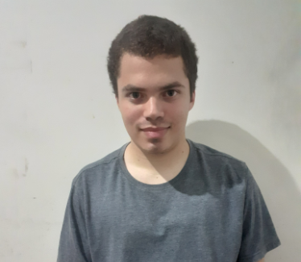

Sobre Mim
Eu sou Pedro , um desenvolvedor full-stack com 3 anos de experiência em Python, Javascript, HTML e CSS e MySQL, bem como desenvolvimento web e segurança, além de trabalhar com outros seguimentos dentro da área de programação.
Bibliografia
Alma Mater: FATEC
Formado no Curso Superior Tecnólogo em Análise e Desenvolvimento de Sistemas em Julho de 2023 pela FATEC Professor Jessen Vidal de São José dos Campos.
Foi bolsista em um projeto de iniciação cientifica na empresa TECSUS Tecnologias para a Sustentabilidade S/A entre Agosto de 2022 e Março de 2024, com a equivalencia de um estágio supervisionado.
Possui uma defesa baseada no formato de artigo cientifico publicado pela Revista da FATEC de São Paulo publicada em Abril de 2023
Habilidades Tecnicas (Hard Skills e Soft Skills)
Habilidades em Hard Skills:
Python, Flask, Raspagem de dados
Java, SpringBoot, Vue
Linguagem C
Javascript, Node
Typescript, Node
HTML e CSS
Linguagem R
SQL Relacional: MySQL, SQLite, MariaDB
SQL Não Relacional: MongoDB
Segurança
Protocolos de Rede
Programação envolvendo matemática
Gestão de Projetos e de Govenança
Metodologia Scrum
Habilidades em Soft Skills:
Comunicação Eficaz
Agilidade
Praticidade
Resolução de Problemas
Criatividade
Interatividade
Objetividade
Bravura: De conseguir se exforçar ao maximo mesmo depois de muito tempo tentando a mesma coisa.
Formação Academica e Complementar
Aqui será exibido todos os cursos e eventos que participei bem como suas respectivas certificações:
Certificado de IA GENERATIVA E O CHATGPT: POTENCIALIZANDO O TRABALHO E GANHANDO EFICIÊNCIA, 1 hora, FGV Online, Janeiro de 2025.
Certificado de DESENVOLVIMENTO DE SISTEMAS WEB: CSS E HTML, 15 horas, FGV Online, Janeiro de 2025.
Certificado de LATEX, 15 horas, FGV Online, Janeiro de 2025.
Certificado de Javascript FastTrack, 7/10 hora, Cursae, Janeiro de 2025.
Certificado de HTML, 1 9/10 hora, Cursae, Janeiro de 2025.
Personalidade
A minha rotina vai muito além de linhas de código, pois nas horas vagas faço outras atividades como escrever memorias do meu proprio passado...
Sou uma pessoa bastante curiosa por natureza.
Gosto de colecionar histórias e tambem principalmente de pessoas das quais eu conheco.
Tambem sou uma pessoa comunicativa, gosto de falar por e-mail e bater um papo presencial ou online.
Pesquiso em enciclopedias online, revistas e artigos cientificos dos mais variados temas da sociedade, bem como passar o tempo no site do dominio publico.
Escrevo memórias sobre o meu passado do que ocorreu ao longo do tempo.
Gosto de fazer estatisticas com dados matemáticos, realizando pesquisas e traduzindo em dados o que foi visto
Gosto de fotografar, em especial espécies de aves e veiculos, mas tambem os flagantes ordinarios.
Gosto muito de calçados, principalmente de modelos exótiocos.
Tambem pratico jogos de tabuleiro.
Genero musical que gosto é trilha sonora, mas abridno espaço para outros generos.